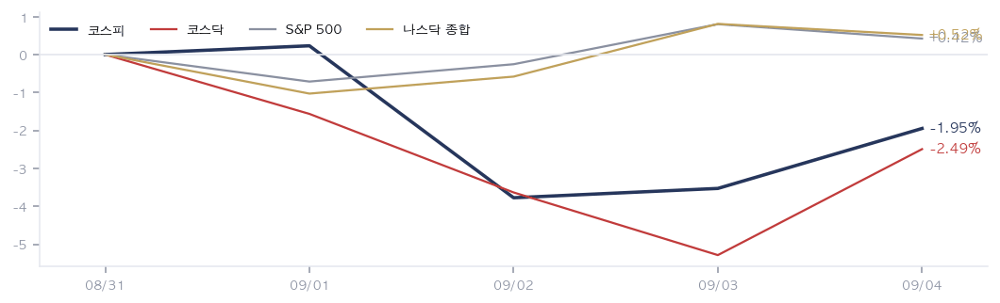
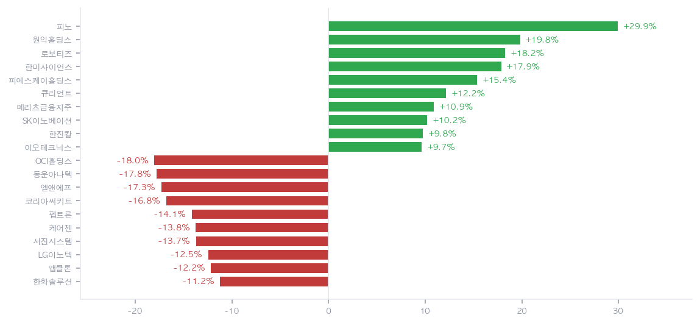
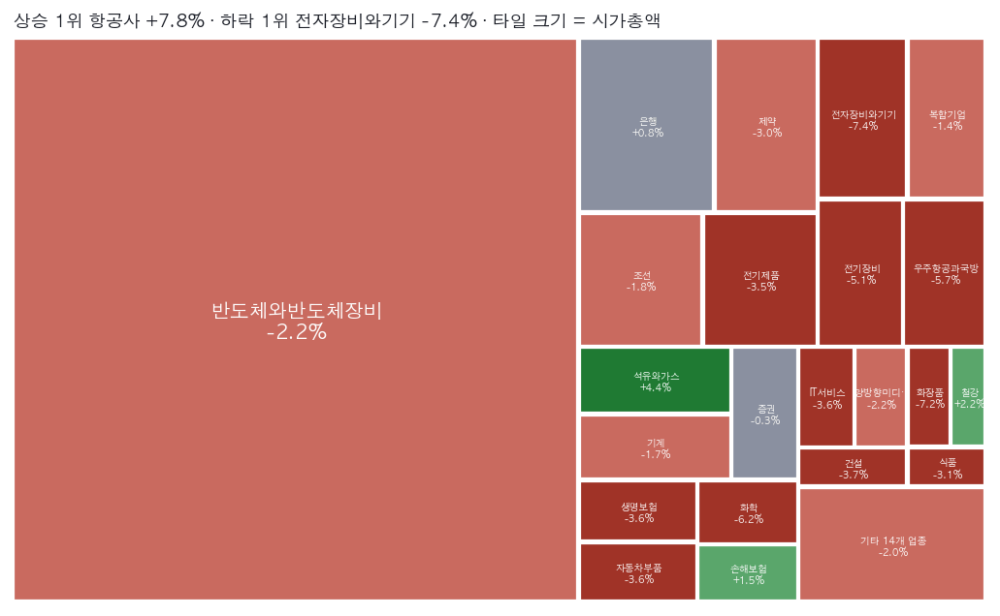
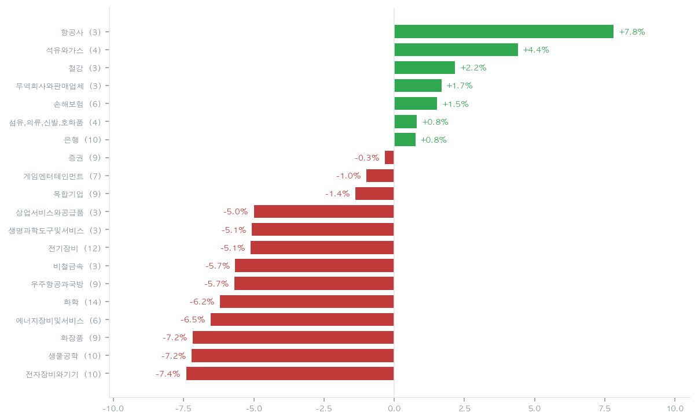
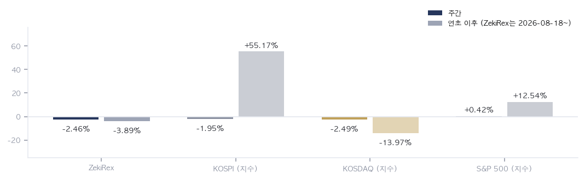

|
ZekiRex™ Apex KR 주간 총결산 8/31~9/4
한 주가 남긴 것 · 1/2
데이터 기준 9/4 종가 |
ZekiRex™ |
|
|
한 주를 한 문장으로. 코스피는 −1.95%, 코스닥은 −2.49%로 내렸고 같은 창에서 S&P 500은 +0.42%였습니다. 서울을 누른 것은 주 초반 외국인 순매도였고, 이데일리는 9/3까지 5거래일 동안 4조7000억원 순매도로 전했습니다. 한국시간 9/4에는 외국인 4798억원과 기관 1조6692억원의 동반 순매수로 되돌렸다고 파이낸셜뉴스가 전했습니다. 서울은 그 반등으로 한 주를 닫았습니다. 문제는 순서입니다. 9/4 08:30 ET(KST 21:30)에 나온 미국 8월 고용지표가 취업자 16만2000명 증가로 5만3000명 안팎이던 예상을 크게 웃돌았고, 9월 15~16일 회의의 인상 확률이 55%에서 65%로 올랐다고 키플링거가 전했습니다. 서울의 한 주는 그 숫자를 보기 전에 이미 끝나 있었습니다. |
| 이번 주 반드시 알아야 할 5가지 | 한 주에 일어난 일 가운데 돈에 영향을 준 것만 다섯입니다. 각 항목은 사실, 왜 그런가, 그래서 무엇인가 순입니다. | 1 | 미국 8월 고용지표가 9월 인상론을 되살렸습니다 사실 9/4 08:30 ET(KST 21:30) 발표에서 비농업 취업자가 16만2000명 늘어 5만3000명 안팎이던 예상을 크게 웃돌았고 실업률은 4.1%로 유지됐다고 로이터와 CNBC가 전했습니다. 키플링거는 9월 15~16일 회의의 인상 확률이 발표 직전 55%에서 65%로 올랐다고 전했습니다. 왜 이틀 사이에 근거가 두 번 바뀌었습니다. 9/3에는 월러 이사의 동결 발언에 뉴욕 세 지수가 함께 올랐고, 9/4에는 이 숫자에 세 지수가 함께 내렸다고 조선일보와 연합뉴스가 전했습니다. 확률의 이동 폭이 그만큼 큽니다 — 한국 9/3 종가 기준으로 이 편지가 전해 드린 인상 확률은 50%였고, 하루 만에 65%가 되었습니다. 값이 아니라 값을 지탱하던 이유가 바뀐 한 주입니다. 행동 — 금리가 오를 쪽으로 기울면 이익이 먼 미래에 몰린 자산이 먼저 깎입니다. 보유 자산에서 성장주와 장기채, 그리고 차입으로 산 부분이 얼마나 되는지 지금 확인해 보십시오. 다만 확률은 65%이지 확정이 아니며, 9/11 소비자물가지수 전에 비중을 크게 바꾸는 것은 아직 판정되지 않은 사건에 베팅하는 일입니다. | | 2 | 서울은 그 숫자를 보기 전에 한 주를 닫았습니다 사실 한국시간 9/4 코스피는 외국인 4798억원과 기관 1조6692억원의 동반 순매수로 반등했고 삼성전자와 SK하이닉스가 상승을 이끌었다고 파이낸셜뉴스가 전했습니다. 개인은 3조원 넘게 순매도했습니다. 이데일리는 하루 전 5거래일 4조7000억원 외국인 순매도를 전했습니다. 왜 한국 9/4 종가는 15:30 KST에 확정됐고 고용지표는 그로부터 여섯 시간 뒤에 나왔습니다. 반등을 만든 근거와 그 뒤에 나온 숫자가 서로 만나지 않았다는 뜻입니다. 게다가 9/7 미국이 노동절로 휴장하므로 서울이 월요일에 반응하더라도 그날 되받아 줄 뉴욕 정규장이 없습니다. 행동 — 지난주 한국 지수의 끝값을 다음 주 출발점으로 그대로 쓰기 어렵습니다. 월요일 서울의 움직임은 확정된 방향이 아니라 아직 확인되지 않은 반응으로 보는 편이 안전하며, 국내 주식을 들고 계시다면 확인이 9/8 이후로 밀린다는 점을 감안해 판단 시점을 잡으십시오. | | 3 | 유가가 한 주에 6.37% 올랐습니다 사실 WTI는 주간 +6.37%로 배럴당 $91.2에 마감해 이번 주 저희 표에서 가장 크게 움직였습니다. 미 재무부가 이란군을 위해 수천만달러를 거래했다는 이유로 튀르키예 은행과 자회사 두 곳을 제재했다고 연합뉴스와 CNBC, PBS가 전했고, 세마포는 이 압박이 유가를 밀어올리고 있다고 전했습니다. 왜 유가는 물가 기대를 통해 금리로 돌아옵니다. 같은 주에 석유와가스 업종이 +4.40%로 올랐고 미 국채 10년물은 4.78%로 0.03%p 높아졌습니다. 제재는 공급 쪽 사건이라 수요가 좋아서 오른 유가와 성격이 다르며, 경기 신호로 읽으면 안 되는 종류의 상승입니다. 행동 — 정유와 조선, 해운을 들고 계시다면 이번 상승은 판가 쪽 재료입니다. 반대로 항공과 운송, 화학은 같은 유가가 원가로 들어옵니다. 한 가지 사건이 보유 종목에 따라 정확히 반대로 작용하므로, 본인 계좌에서 유가가 매출로 들어오는 쪽과 비용으로 들어오는 쪽의 비중을 나눠 보십시오. | | 4 | 원화는 오히려 1.61% 강해졌습니다 사실 원/달러는 주간 1.61% 내린 ₩1,347.40으로 마감해 원화가 강해졌습니다. 이 값은 9/4 15:30 KST 서울 마감을 기준으로 한 것이며, 같은 날 21:30 KST에 나온 미국 고용지표의 반응은 아직 들어 있지 않습니다. 왜 금리가 인상 쪽으로 기울면 보통 달러가 강해지는데 이번 주 원화는 반대로 움직였습니다. 다만 그 기울기를 만든 숫자가 나오기 전의 값이므로 이 강세를 고용지표에 대한 반응으로 읽어서는 안 됩니다. 순서를 지키면, 원화 강세는 고용지표 이전의 사건입니다. 행동 — 수출 기업의 이익은 환산 단계에서 원화 강세만큼 깎입니다. 반도체와 자동차, 조선처럼 달러로 파는 종목을 들고 계시다면 3분기 실적 추정이 어느 환율을 깔고 있는지 확인해 보십시오. 반대로 원유와 원자재를 사 오는 정유·화학·항공에는 원가를 낮추는 방향으로 작용합니다. | | 5 | 저희 화면은 한 주 내내 거의 움직이지 않았습니다 사실 9/4 기준 한국에서 조건을 통과한 종목은 616개 가운데 13개이며, 월요일 14개에서 한 자리만 움직였습니다. 통과한 13개 안에 신한지주, 하나금융지주, KB금융, 현대해상까지 은행과 보험이 넷입니다. 왜 지수를 끌어올린 삼성전자와 SK하이닉스는 그 13개 안에 없습니다. 지수를 움직인 종목과 조건을 통과한 종목이 서로 다른 목록이라는 뜻입니다. 통과 종목 수가 닷새 동안 한 자리밖에 움직이지 않은 것은 마지막 날 반등이 넓지 않았다는 신호입니다. 행동 — 지수가 하루 올랐다는 사실만으로 회복이 넓어졌다고 읽지 않는 편이 안전합니다. 폭을 재는 방법은 지수 수준이 아니라 오른 종목의 수와 업종 분포이며, 이번 주에는 그 폭이 넓어지지 않았습니다. 본인이 보는 종목에서도 같은 업종이 함께 오르고 있는지 확인해 보십시오. |
|
| 한 주 총결산 | | 지표 | 금요일 종가 | 주간 | 연초 이후 | | 코스피 | 6,687 | -1.95% | +55.17% | | 코스닥 | 814 | -2.49% | -13.97% | | S&P 500 | 7,719 | +0.42% | +12.54% | | 나스닥 | 26,507 | +0.52% | +14.08% | | 비트코인 | $79,720 | +1.47% | -10.16% | | 원/달러 | ₩1,347.40 | -1.61% | -6.86% | | 미 국채 10년 | 4.78% | +0.03%p | +0.60%p | | WTI 원유 | $91.2 | +6.37% | +59.14% | | 금 | $4,477 | +1.04% | +3.77% |
표의 주간 등락은 한국 8/31 종가에서 한국 9/4 종가까지 5거래일을 잰 값이고, 미국 지수와 원자재는 같은 날짜의 현지 종가입니다. 원/달러는 1.61% 내린 ₩1,347.40으로 원화가 강해졌는데, 이 값은 9/4 15:30 KST 서울 마감 기준이라 그날 21:30 KST에 나온 미국 고용지표의 반응은 들어 있지 않습니다. WTI는 +6.37%로 이번 주 표에서 가장 크게 움직였습니다. 연합뉴스와 CNBC는 미 재무부가 이란군 관련 거래를 이유로 튀르키예 은행 두 곳을 제재했다고 전했고, 세마포는 그 압박이 유가를 밀어올리고 있다고 전했습니다. |
| 한 주 움직인 것 | 측정 263개 / 추적 350개 — 주간 전체를 거래한 종목만 측정 그 주 오른 종목 | 피노 033790 | +29.94% | | 원익홀딩스 030530 | +19.81% | | 로보티즈 108490 | +18.25% | | 한미사이언스 008930 | +17.86% | | 피에스케이홀딩스 031980 | +15.38% | | 큐리언트 115180 | +12.17% | | 메리츠금융지주 138040 | +10.88% | | SK이노베이션 096770 | +10.20% | | 한진칼 180640 | +9.77% | | 이오테크닉스 039030 | +9.65% |
| 그 주 내린 종목 | OCI홀딩스 010060 | -18.02% | | 동운아나텍 094170 | -17.79% | | 엘앤에프 066970 | -17.31% | | 코리아써키트 007810 | -16.80% | | 펩트론 087010 | -14.14% | | 케어젠 214370 | -13.76% | | 서진시스템 178320 | -13.72% | | LG이노텍 011070 | -12.46% | | 앱클론 174900 | -12.20% | | 한화솔루션 009830 | -11.23% |
|
유니버스 350종목 가운데 닷새를 온전히 거래한 263종목을 기준으로 위아래 열씩입니다. 오른 쪽은 피노 +29.94%, 원익홀딩스 +19.81%, 로보티즈 +18.25% 순이고, 내린 쪽은 OCI홀딩스 −18.02%, 동운아나텍 −17.79%, 엘앤에프 −17.31% 순입니다. 내린 열 자리 가운데 여섯이 이차전지·태양광·바이오입니다 — OCI홀딩스, 엘앤에프, 한화솔루션, 펩트론, 케어젠, 앱클론입니다. 오른 쪽은 로봇·화장품·정유·지주가 섞여 있어 한 주제로 묶이지 않습니다. 유니버스 평균은 −1.95%로 코스피와 같았습니다. |
| 보유 종목의 한 주 | | 종목 | 금요일 종가 | 주간 | 평가손익 | 손절가 | 손절 여유폭 | | 타이거일렉 219130 | ₩60,400 | -4.58% | -6.07% | ₩59,156 | +2.1% | | 한국콜마 161890 | ₩145,800 | -8.93% | +0.00% | ₩134,136 | +8.7% | | 샘씨엔에스 252990 | ₩13,660 | +5.89% | +6.06% | ₩11,850 | +15.3% | | GS 078930 | ₩123,900 | -2.52% | +6.63% | ₩106,904 | +15.9% |
보유 네 종목입니다. 샘씨엔에스만 주간 +5.89%로 올랐고 GS −2.52%, 타이거일렉 −4.58%, 한국콜마 −8.93%입니다. 계좌는 주간 −2.46%로 코스피 −1.95%에 뒤졌고 코스닥 −2.49%와는 거의 같았습니다. 이번 주 표에서 가장 중요한 숫자는 손절 여유폭입니다. 타이거일렉은 한국 9/4 종가 ₩60,400이 손절선 ₩59,156에서 2.1% 위이며, 한국 증시의 하루 등락 폭을 생각하면 한 세션이면 닿는 거리입니다. 한국콜마는 한국 8/31 종가 대비 −8.93%였지만 매입가와 같은 ₩145,800으로 주를 마쳤고 손절선까지는 8.7% 남았습니다. 네 자리가 모두 차 있어 이번 주 새로 산 종목은 없습니다. |
|
|
다음 주를 위한 것 · 2/2
데이터 기준 9/4 종가 |
ZekiRex™ |
|
|
| 그 밖에 알아야 할 것 | | 트럼프, 연준 압박하며 교역 중단 위협 반복 · 트럼프 대통령이 연준이 금리를 내리지 않으면 주요 교역 상대국과의 무역을 중단하겠다는 위협을 되풀이했다고 CNBC와 사우스차이나모닝포스트가 전했습니다. (CNBC · South China Morning Post) → 정책 압박이 커질수록 금리 경로의 분산이 넓어집니다. 한국 수출 기업에는 관세와 금리가 한 사건으로 묶여 오는 구조라, 어느 쪽으로 풀리든 환율을 통해 실적에 닿습니다. | | 노르웨이 국부펀드, 미 국채 보유 대폭 축소 제안 · 세계 최대 국부펀드인 노르웨이 정부연기금 운용사가 미 국채 보유를 크게 줄이는 방안을 제안했다고 CNBC와 글로브앤메일, 파이낸셜타임스가 전했습니다. (CNBC · Globe and Mail · Financial Times · Fortune) → 고용지표로 단기 금리 부담이 커진 날에 장기 수요 쪽 물음이 겹쳤습니다. 미 국채 10년물이 4.78%에 있는 국면에서 대형 보유자의 방향 전환은 국내 채권형 자산의 기대수익에도 이어집니다. | | 국민의힘, 레버리지 상장지수펀드 국정조사 요구 · 국민의힘이 레버리지 상장지수펀드를 겨냥한 국정조사 요구서를 제출했다고 동아일보가 전했습니다. 손실 논란이 시장 안에서 정치 일정으로 옮겨간 사안입니다. (Dong-A Ilbo) → 레버리지 상품은 일간 재조정 구조라 보유 기간이 길수록 지수와 벌어집니다. 지수 방향을 맞혀도 수익이 따라오지 않을 수 있다는 뜻이므로, 보유 중이라면 기간을 먼저 확인하십시오. | | 시타델, 미국 셰일 생산 자산 인수 추진 · 헤지펀드 시타델이 미국 셰일 지대의 생산 자산 인수를 추진하고 있다고 로이터가 복수의 소식통을 인용해 단독으로 전했습니다. (Reuters) → 금융자본이 생산 자산을 직접 사면 공급 결정의 주체가 바뀝니다. 유가가 6.37% 오른 주에 나온 소식이라, 이번 주 오른 석유와가스 업종의 근거가 몇 분기 뒤 어떻게 달라질지의 물음으로 남습니다. | | 이 주에 읽은 매체는 22곳이며 한국 매체와 해외 매체를 함께 봤습니다. 한 기사만 근거인 항목은 그렇게 적었습니다. |
| 한국과 미국을 잇는 것: 이번 주의 연결 고리는 순서와 달력입니다. 서울은 한국시간 9/4 반등으로 한 주를 닫았고, 그 뒤에 나온 미국 고용지표는 아직 한국 값에 실리지 않았습니다. 9/7 미국이 노동절로 휴장하므로 서울이 월요일에 그 숫자를 반영하더라도 그날 뉴욕에서 되받아 줄 정규장이 없습니다. 반영과 확인 사이가 하루 더 벌어진다는 뜻이며, 그 하루는 국내 투자자에게 정보가 아니라 공백입니다. |
 월요일 종가를 0으로 놓고 그린 닷새입니다. 코스피 −1.95%, 코스닥 −2.49%로 중소형주가 더 밀렸고, 같은 창의 S&P 500은 +0.42%였습니다. 두 시장이 갈라진 자리가 이번 주의 핵심입니다 — 서울의 마지막 날 반등은 미국 고용지표가 나오기 전에 끝났다는 뜻이며, 그래서 이 선의 끝점을 다음 주 출발점으로 그대로 쓰기 어렵습니다. |
 닷새를 온전히 거래한 263종목의 주간 등락 위아래 열씩입니다. 오른 폭은 +29.94%에서 +9.65%, 내린 폭은 −18.02%에서 −11.23%로 오른 쪽이 더 큽니다. 다만 내린 쪽은 이차전지·태양광·바이오로 여섯이 몰려 한 방향을 가리키고, 오른 쪽은 업종이 흩어져 있습니다. 하락은 업종 사건이고 상승은 종목 사건이었다는 뜻입니다. |
 짙은 초록은 상승, 짙은 붉음은 하락, 타일 크기는 시가총액입니다. 수익률 1위는 피노 +29.94%지만 지도에서 큰 칸을 실제로 움직인 것은 SK이노베이션 +10.20%였고 유니버스 평균은 −1.95%입니다. 막대 1위보다 히트맵의 큰 칸이 움직였을 때가 진짜 주도 업종이라는 뜻입니다. 이 지도는 후보 종목과 같은 우물이라 뜨거운 칸을 먼저 봐야 합니다. |
 구성원 셋 이상인 업종의 주간 등락이며 막대는 소속 종목 수익률의 단순평균입니다. 금색 점선은 유니버스 평균 −1.95%입니다. 위쪽은 항공사 +7.81%, 석유와가스 +4.40%, 철강 +2.16%로 지금 현금을 버는 업종입니다. 금리가 오를 쪽으로 기운 주에 나타나는 배열이라, 9/11 소비자물가지수가 뒤집으면 이 순서도 함께 뒤집힌다는 뜻입니다. |
 한국 8/31 종가에서 한국 9/4 종가까지 같은 창으로 잰 주간 수익률입니다. 계좌 −2.46%, 코스피 −1.95%, 코스닥 −2.49%로 코스피에 0.51%p 뒤졌습니다. 한국콜마 −8.93% 한 종목이 낙폭의 대부분을 만들었습니다. 네 종목을 같은 크기로 들고 있으면 한 종목의 사고가 계좌 전체의 4분의 1만큼 실린다는 뜻입니다. |
| 다음 주 반드시 알아야 할 5가지 | 이번 주 시사점에서 이어지는 다섯입니다. 무엇을 보면 되는지까지 적었습니다. | 1 | 9/7 미국 노동절 휴장 — 월요일에 기댈 값이 없습니다 사실 9/7(월)은 미국 노동절로 뉴욕 정규장이 열리지 않습니다. 9월 첫째 월요일이며 미국 공휴일 일정에서 확인했습니다. 왜 서울이 월요일에 고용지표를 반영하더라도 그날 되받아 줄 미국 정규장이 없습니다. 반영과 확인 사이가 하루 더 벌어지고, 그 하루 동안 서울의 값은 검증되지 않은 채로 남습니다. 행동 — 월요일 하루의 움직임을 방향 확정으로 읽지 마십시오. 국내 주식 비중을 조정할 생각이라면 9/8 이후 미국 정규장이 한 번 지난 뒤가 정보가 더 많은 자리입니다. | | 2 | 9/11 미국 8월 소비자물가지수가 기울기를 판정합니다 사실 미국 8월 소비자물가지수는 9/11 08:30 ET, 한국시간 9/11 21:30에 나옵니다. 9월 15~16일 회의 전 마지막 물가 지표이며 미 노동통계국 공표 일정에서 확인했습니다. 왜 이번 주 고용지표가 만든 인상 쪽 기울기를 확인하거나 되돌리는 숫자입니다. 유가가 6.37% 오른 주 뒤에 나오는 물가 지표라 에너지 항목이 특히 무겁게 읽힐 자리입니다. 행동 — 성장주와 장기채 비중을 바꿀 계획이 있다면 이 날짜 이후가 정보가 가장 많이 늘어나는 자리입니다. 그 전에 움직이는 것은 아직 판정되지 않은 사건에 미리 베팅하는 것과 같습니다. | | 3 | 유가 경로 — 이란 제재가 유지되는지 사실 WTI가 주간 6.37% 올라 $91.2로 마감했고, 제재는 진행 중이며 해제 일정은 나와 있지 않습니다. 세마포는 이 압박이 유가를 밀어올리고 있다고 전했습니다. 왜 이번 주 오른 업종의 근거가 여기에 걸려 있습니다. 석유와가스 +4.40%와 철강 +2.16%는 유가가 유지된다는 가정 위에 서 있고, 유가가 물가로 넘어가면 금리 부담이 다시 커집니다. 행동 — 정유와 해운 비중이 있다면 유가가 그 근거이므로 제재 관련 보도를 근거 점검 항목으로 두십시오. 항공과 화학은 같은 뉴스가 반대로 작용하며, 두 쪽을 함께 들고 있다면 서로 상쇄된다는 점도 함께 보십시오. | | 4 | 오라클과 어도비 실적 — 인공지능 투자의 확인 지점 사실 오라클과 어도비의 분기 실적이 다음 주 예정이라는 보도만 확인했고 확정 일자는 이번 확인에서 잡지 못해 비워 둡니다. 왜 인공지능 투자가 소프트웨어 실적으로 넘어오는지를 보여 주는 다음 확인 지점입니다. 국내 반도체와 서버 관련 종목의 수요 가정이 이 미국 소프트웨어 실적에 이어져 있습니다. 행동 — 국내 반도체 관련 종목을 들고 계시다면 이 실적을 수요 확인 자료로 보십시오. 다만 날짜가 확정되지 않았으므로 특정 날짜를 전제로 미리 움직이는 것은 권하지 않습니다. | | 5 | 이번 주 크게 내린 업종이 되돌아오는지 사실 주간 하위 열 자리 가운데 여섯이 이차전지·태양광·바이오였습니다. 엘앤에프 −17.31%, 펩트론 −14.14%, 한화솔루션 −11.23%, 케어젠 −13.76%, 앱클론 −12.20%, OCI홀딩스 −18.02%입니다. 왜 이들이 내린 이유는 개별 실적이 아니라 금리 기울기였습니다. 그렇다면 되돌아오는 이유도 실적이 아니라 금리이며, 그 방아쇠는 9/11 소비자물가지수입니다. 행동 — 낙폭이 크다는 이유만으로 담는 것은 금리 방향에 베팅하는 것과 같습니다. 이번 주 내린 이유가 할인율이었다면 회복도 할인율에 달려 있다는 뜻이므로, 9/11 이후에 확인하고 판단하는 선택지를 함께 두십시오. |
|
| 다음 주 핵심 | | 9/7 (월) | 미국 노동절 휴장 (뉴욕 정규장 없음, 현지시간) 서울 월요일 장이 참고할 미국 정규장 값이 없어, 반영과 확인 사이가 하루 벌어집니다. | | 9/11 (금) 21:30 KST | 미국 8월 소비자물가지수 (9/11 08:30 ET, 현지시간) 9월 15~16일 회의 전 마지막 물가 지표로, 이번 주 고용지표가 만든 인상 쪽 기울기를 확인하거나 되돌립니다. | | 일정 미정 | 오라클·어도비 분기 실적 인공지능 투자가 소프트웨어 실적으로 넘어오는지의 확인 지점입니다. 다음 주 예정 보도만 확인해 날짜를 적지 않습니다. | | 일정 미정 | 코스닥 퇴출 요건 강화 6개월 유예의 시행 시점 매일경제는 유예와 함께 흑자 기업의 코넥스 이전을 허용하되 시가총액 미달 기업은 대상으로 남는다고 전했습니다. 코스닥 소형주 수급에 걸립니다. |
|
다음 주를 어떻게 볼 것인가. 이번 주에 오른 것과 내린 것을 나란히 놓으면 성격이 분명합니다. 오른 업종은 항공사 +7.81%, 석유와가스 +4.40%, 철강 +2.16%, 손해보험 +1.52%, 은행 +0.75%였고, 크게 내린 쪽에는 엘앤에프 −17.31%, 펩트론 −14.14%, 한화솔루션 −11.23%처럼 이익이 먼 미래에 몰린 이름들이 있습니다. 금리가 오를 쪽으로 기울면 지금 버는 돈이 나중에 벌 돈보다 비싸집니다. 저희 화면도 같은 방향을 가리킵니다 — 616종목 가운데 조건을 통과한 13종목에 은행과 보험이 넷입니다. 다만 이 기울기를 만든 고용지표는 아직 한국 값에 실려 있지 않고, 9/7 미국이 노동절로 쉬기 때문에 서울이 월요일에 그 숫자를 반영하더라도 그날 되받아 줄 뉴욕 정규장이 없습니다. 반영과 확인 사이가 하루 더 벌어진다는 뜻입니다. 9/11 미국 8월 소비자물가지수가 이 기울기를 확인하거나 되돌립니다. |
| 출처: 한국거래소(KRX) 공시 시세, 15:30 종가 · 서울 외국환중개 고시 환율 · Yahoo Finance, 16:00 ET · 연합뉴스·파이낸셜뉴스·이데일리·매일경제·조선일보·동아일보 · Reuters·CNBC·Bloomberg·Financial Times·Kiplinger·Semafor·PBS·South China Morning Post |
|
모의 포트폴리오입니다. 실제 계좌가 아니며 투자 권유가 아닙니다. |
| This is the Rex Way, ZekiRex™ |
|